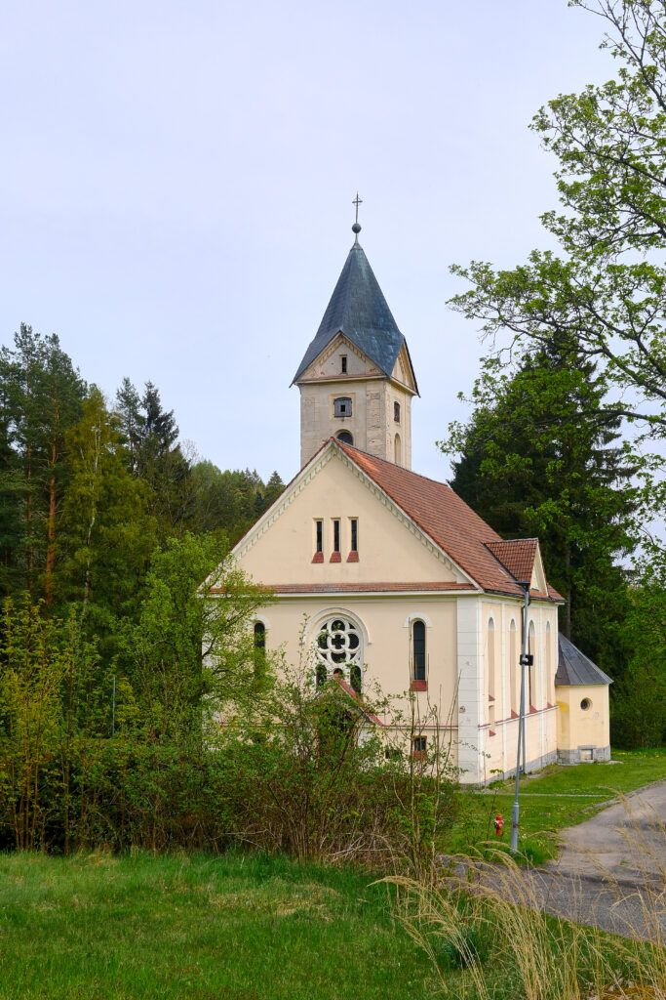

1914–1925
Kostel sv. Petra a Pavla v Rotavě
Vydupaný ze země dělnickou vytrvalostí
Zatímco jiné kostely stavěla bohatá šlechta, tento pseudorománský kostel (1914–1925) si postavili sami dělníci z místních železáren. Procházel nejtěžší zkouškou – stavěl se během první světové války, kdy byl kritický nedostatek materiálu i peněz. Přesto ho místní lidé s obrovskou láskou dokončili.